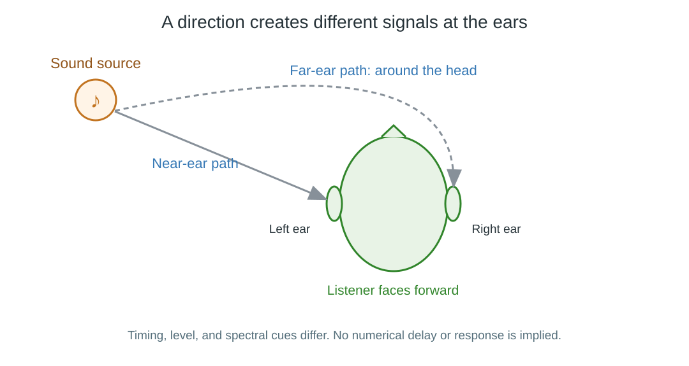

Binaural Audio
Binaural audio supplies left-ear and right-ear signals with the cues used to perceive sound direction.
A sound on the left reaches the left ear earlier and often more strongly than the right. It is also filtered differently by the listener's head and outer ears. Binaural audio supplies the resulting ear signals, either by recording them or by calculating them for a modeled listener.

Qualitative illustration. It does not prescribe a measured delay or an HRTF response for every direction.
Three kinds of cue work together
| Cue | Information it can supply |
|---|---|
| Interaural timing difference | The relative arrival times at the ears |
| Interaural level difference | The relative strength, influenced by head shadow |
| Direction-dependent spectral shape | The frequency changes caused by head, torso, and outer ears |
Level and timing differences help distinguish the two sides. Spectral structure is especially important for distinctions such as front/back and elevation, where a simple left/right balance can remain similar.
For illustration, a 0.3 ms interaural delay corresponds to 14.4 sample intervals at 48 kHz. It need not be an integer shift. A directional filter can encode fractional timing and frequency response together.
Generate the ear signals from one sound
A renderer chooses a head-related transfer function (HRTF) for the sound's direction. In practice, the corresponding left/right filters describe how an incoming sound is transformed for each ear.
It applies the left-ear filter to the sound for one output and the right-ear filter for the other. With several source components, it filters each component for its direction and sums the contributions into the two ear outputs. The final pair can therefore represent a complex scene even though the stored file or output is only two channels.
A dummy-head recording captures a related effect physically: microphones positioned at the ears receive the acoustic transformations during recording.
Why headphones and speakers behave differently
Headphones deliver each intended signal mostly to its corresponding ear. A pair of loudspeakers sends both channels to both ears and adds the room response. Playing a headphone-oriented binaural recording through speakers therefore adds another acoustic mixing step to signals that were already prepared as ear feeds.
A conventional stereo mix is usually created for a left/right soundstage rather than a particular pair of ear filters. It can use the same storage format as binaural audio while having a different intended presentation.
Keep a virtual sound fixed while the head moves
A live renderer with head tracking can update the direction relative to the listener. If a sound is directly in front in the virtual world and the listener turns 30 degrees to the right, that sound is now 30 degrees to the left relative to the head. The filters should change accordingly.
A finished two-channel binaural file generally contains only the already rendered ear signals. It does not automatically include the scene components and position data needed for that re-rendering. Its apparent scene can move with the listener's head instead of remaining fixed in the virtual world.
Why the same render differs among listeners
HRTFs embody anatomy. A generic model can give one listener clear external positions while another hears front/back ambiguity or weaker elevation. Headphone response and playback processing also alter the cues.
For a track described as binaural in an Emby collection, its two-channel label tells you how many signals are delivered, while its description explains their intended ear-based role. A second virtualizer can filter those signals again and change the prepared cues. Comparing the original pair directly with additional processing disabled helps reveal what that stored render supplies.